Leading a land in a city-builder game, Neopolis
Designing the Mayor Feature for Neopolis
A late-game monetization feature that lets players buy and lead virtual neighborhoods, organize events, and shape in-game communities through leadership and NFTs.
Note: Since many people asked me, in Neopolis the illustrations are beautifully crafted by our talented artist, Sego

The Problem
A new revenue stream for late-game players
Neopolis needed a new revenue stream, and the clearest opportunity was our high-level players (level 20+): our most invested audience, but one with little left to work toward. Only 12% of them remained daily active, while 28% were inactive and 19% returned only monthly. We saw a chance to design a feature players would pay for because it gave them what they were missing: new late-game goals, a social role, and deeper ownership.
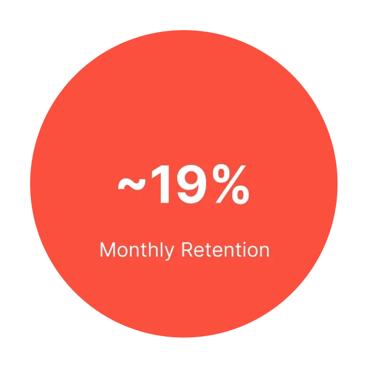
Discovery
Understanding Why High-Level Players Stop Playing or Don’t Return to Neopolis
We began by investigating player pain points and desires to understand the reasons behind their disengagement. We organized monthly Neopolis Council sessions and dedicated a special one specifically to this research.
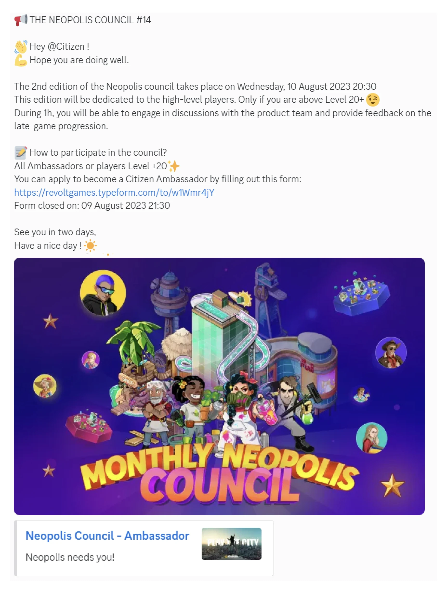
Research Result
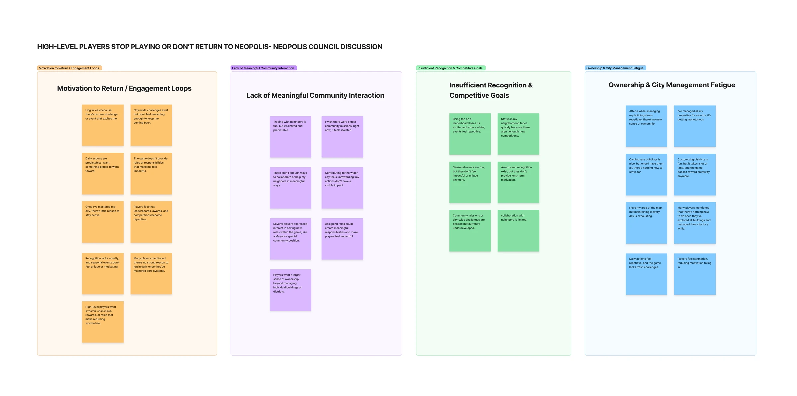
Key Findings:
- Players feel the game becomes repetitive once they’ve managed all buildings and districts.
- Daily actions lack novelty, reducing motivation to log in regularly.
- Players expressed interest in new roles, such as a Mayor or community leader.
- Roles would give high-level players purpose and create meaningful responsibilities.
- Current ownership mechanics feel limited; players want their decisions to have a bigger impact.
- A larger sense of ownership would enhance attachment and long-term engagement.
- Collaboration with neighbors is minimal, and community missions are underdeveloped.
- Players want opportunities to contribute meaningfully to the wider city.
- Leaderboards, awards, and seasonal events become repetitive and lose motivating power.
- Players want evolving competitions and recognition systems.
- Experienced players have fewer reasons to return once they’ve mastered core systems.
- Dynamic challenges, rewards, and evolving content are needed to sustain engagement.
Journey Mapping
I started creating a journey map in collaboration with the game designer and product manager to better understand the player experience and identify key moments of engagement and friction.
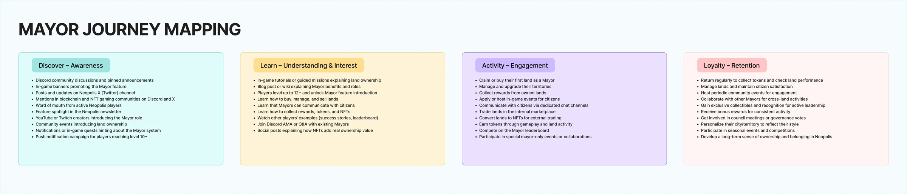

Research:
Early design testing
Building a feature like Mayors would take the team a lot of time, so before committing we ran a fake-door test in the game to see whether players would actually pay for it.
We created a simple poster inviting players to become a mayor, with a real purchase button priced at 25€. Players who clicked could leave their email and sign up to be among the first mayors in Neopolis. I designed this test using the Neopolis design system, and our motion designer created some beautiful GIFs to boost engagement.
Research goal:
To measure purchase intent: would players click to buy a mayor role before the feature existed?
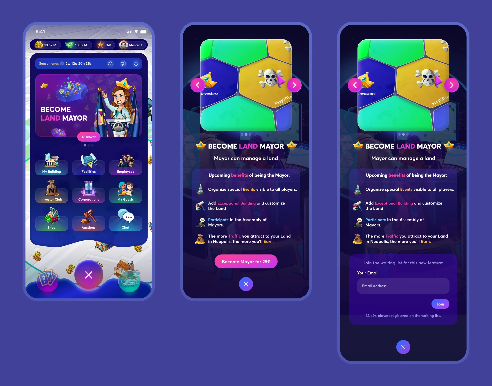
Research Result:
We showed the offer to 11.5K new players opening the app for the first time. 1,950 of them (17%) opened it, and 130 tapped "Become Mayor for 25€" for a feature that didn't exist yet: 1.1% of everyone who saw it, and 6.7% of those who opened the offer. These players chose to pay a real price, not just to show interest.
Since this test reached new players rather than the level 20+ players we were designing for, we treated it as an early demand signal, not proof. It was enough for the team to commit to building the feature in phases, and we validated it with high-level players next through council sessions and interviews.
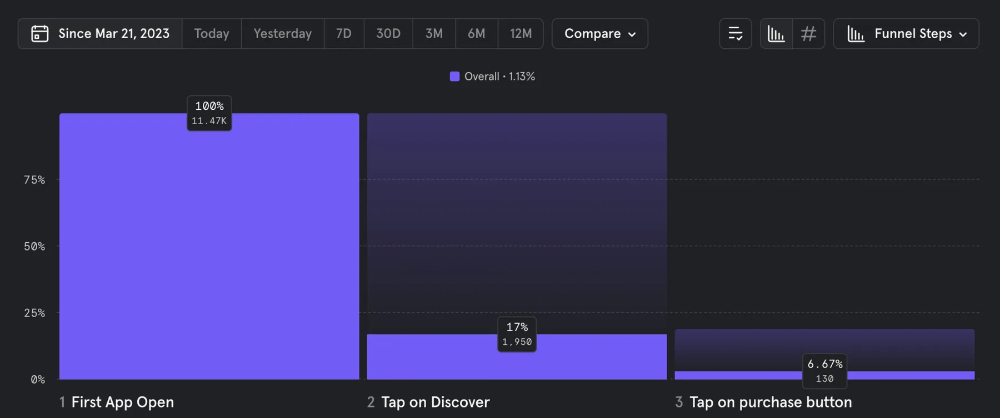
Discovery
We participated in another council with Neopolis players to introduce the Mayor feature and gather their feedback. In addition, we launched announcements and marketing campaigns to better understand players’ perspectives and gauge their overall interest in the feature.
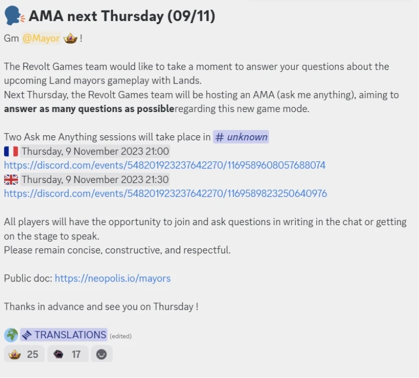
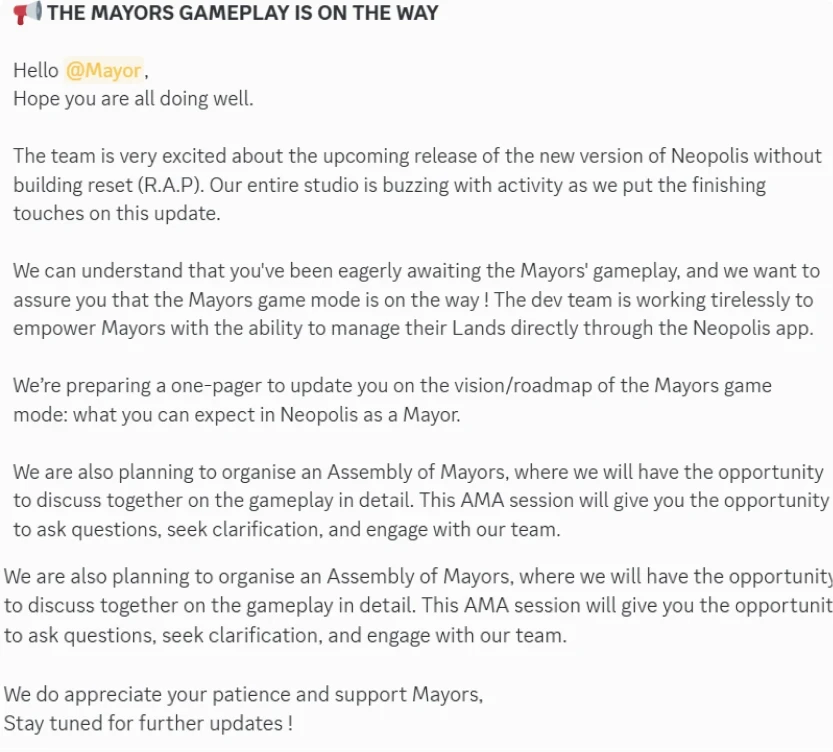
Affinity Mapping
After synthesizing and analyzing the research data, I identified several key considerations that would significantly shape the Mayor feature, ranging from user expectations around leadership and social interaction to concerns about fairness, accessibility, and long-term engagement.

What I learned
To understand exactly how players felt about the feature, we started talking to them directly through interviews. We spoke with 12 individuals from a range of backgrounds:
Wireframing
Based on the findings, I began creating initial sketches and wireframes. I reviewed them with the team, including developers, the game designer, artist, and product manager, to ensure alignment and gather early feedback.

UI Design
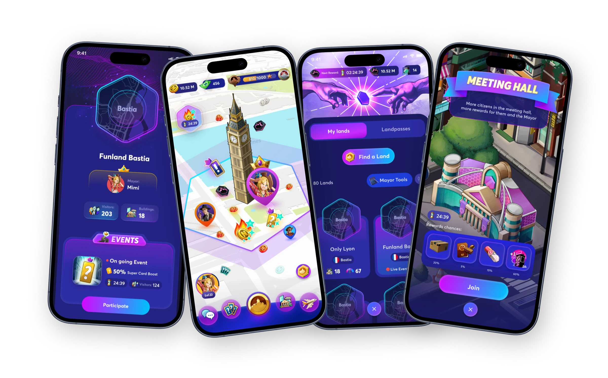
After trying out different ideas through sketches, I landed on the final design for the Mayor feature. The map clearly shows different land types, like available lands, your own lands, other players’ lands, live events, and locked areas.

Purchasing a land as a new mayor

Mayors Event Creation
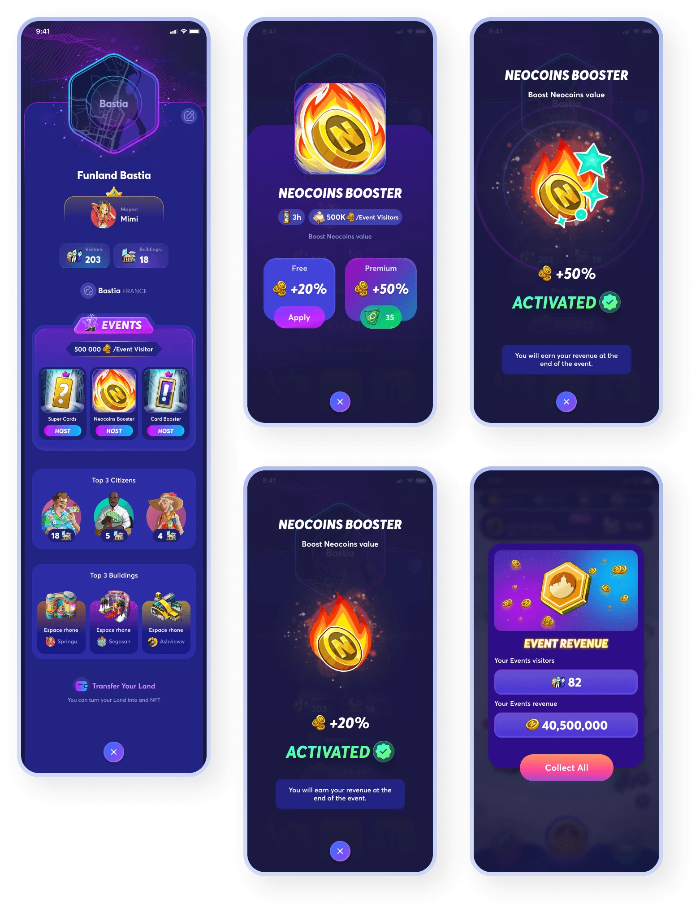
Citizens Event Experience
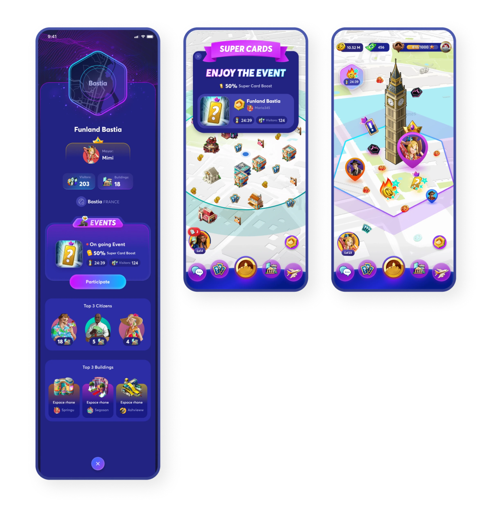
Meeting Hall Event

Usability test on the prototype
I conducted initial usability testing with 4 players, focusing on the new land feature within the early prototypes.
Test Goal:
Exploring two key functionalities: land purchasing flow and participation in land events.
What I learned:
This test showed positive results overall—users found the experience smooth, especially when it came to purchasing and discovering events. However, some key concerns surfaced around the land page.
Mayors pointed out the lack of advertising tools and land performance stats, making it harder to manage their territories effectively.
Both Mayors and regular players wanted a clearer understanding of how tokens relate to events, particularly premium ones. Their questions highlighted areas for improvement:
"Do all lands have the same value?"
"How can other players find our events if they’re not in this location?"
"Can I use my tokens to run a premium event?"
These insights helped refine the experience and shape the next design decisions.
Iterating on the Design:
Together with the team, we made several key changes based on user testing insights, which were handed off in different design iterations:
Land Performance Section:
We added a performance section to all lands, highlighting their value as in-game or NFT assets. Performance is based on metrics like land popularity, number of events, visitor count, buildings, and citizens. These criteria were carefully aligned with the game mechanics, in collaboration with the game designer.
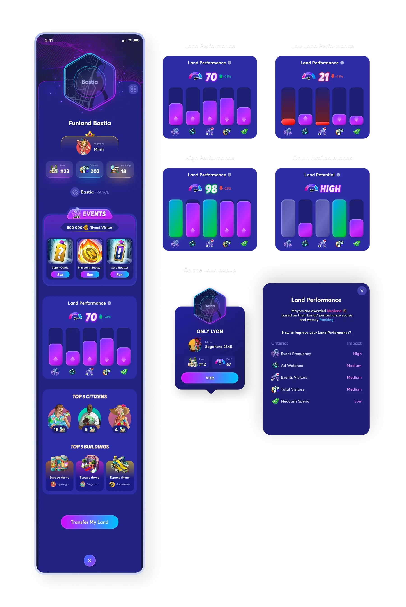
Land Rankings:
A new ranking system was introduced, based on the Neoland token produced by the land, to reward high-performing lands. Top-ranked lands now get more tokens rewards, adding an extra layer of motivation and progression.
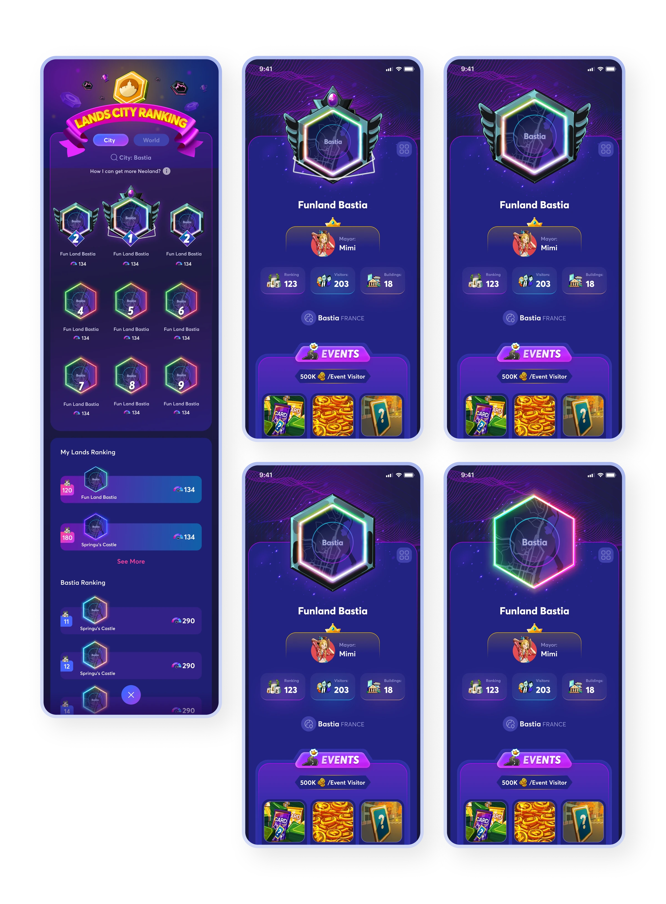
Event Sharing Channel:
To help Mayors promote their events, we introduced a dedicated event-sharing channel within the Neopolis chat. This allows them to reach more citizens, even outside their land’s location.